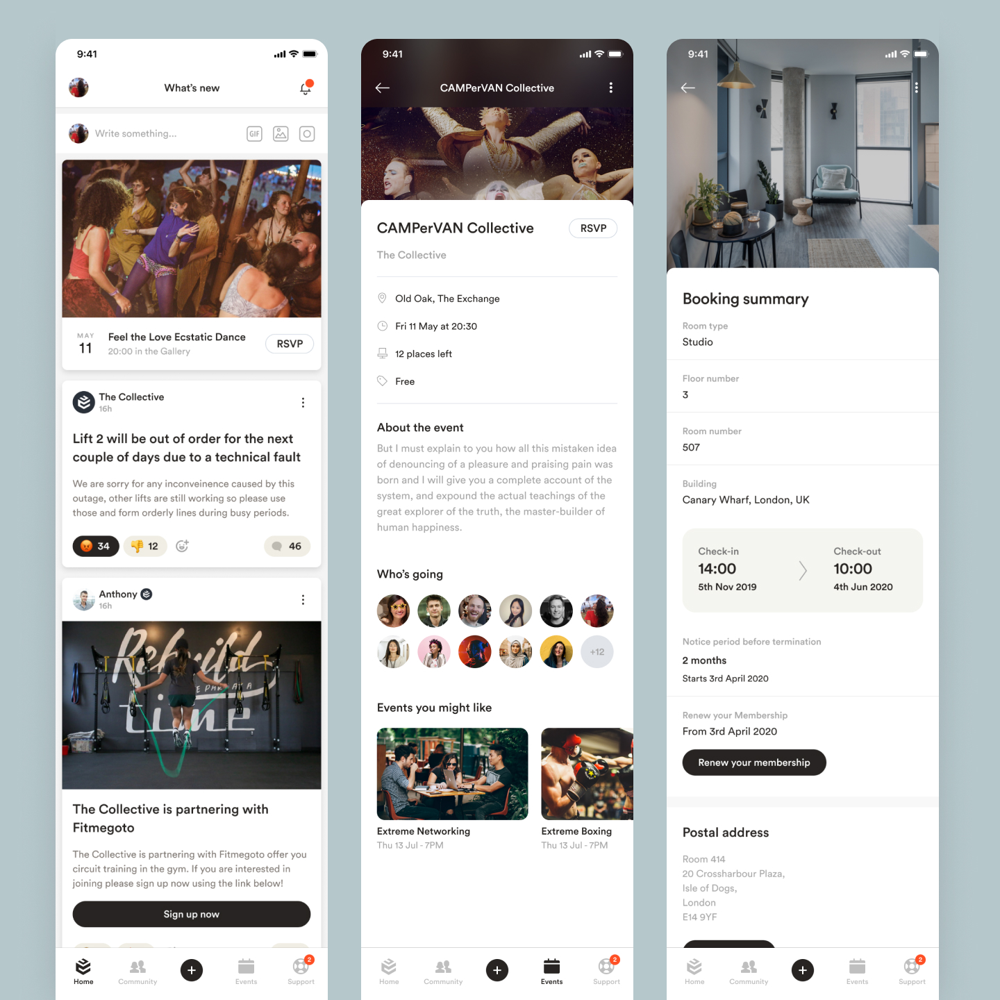
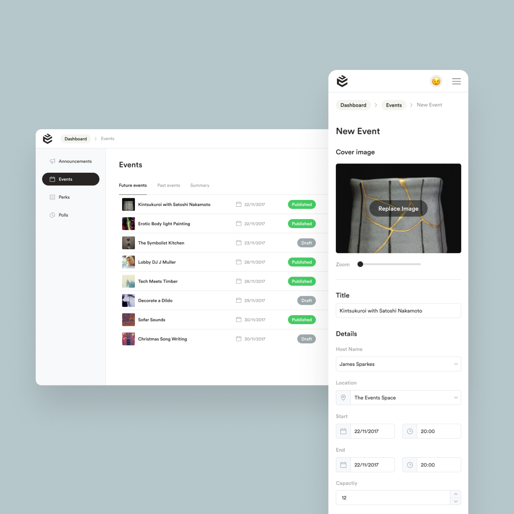
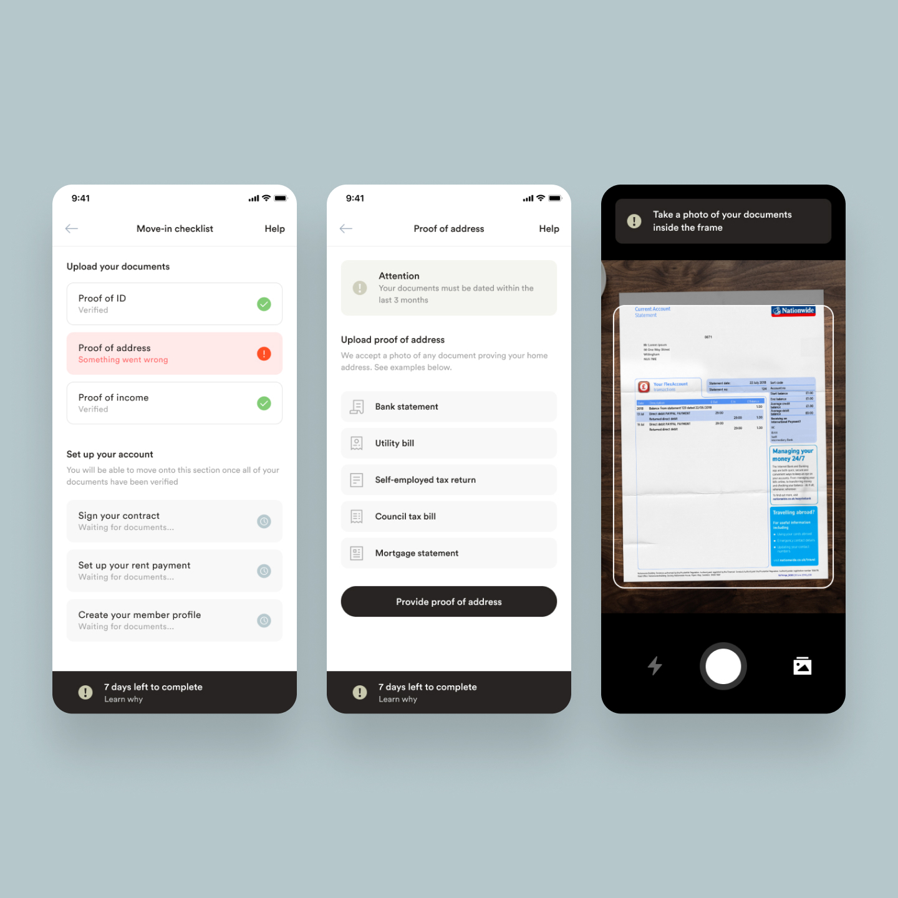
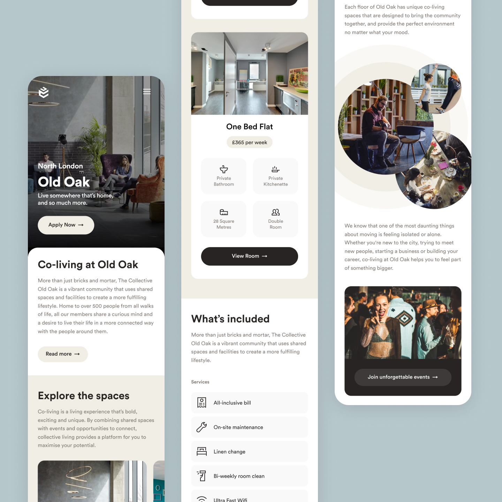
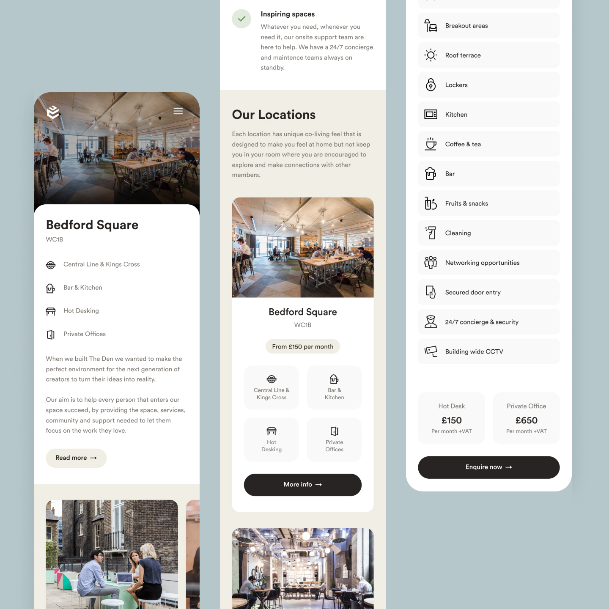
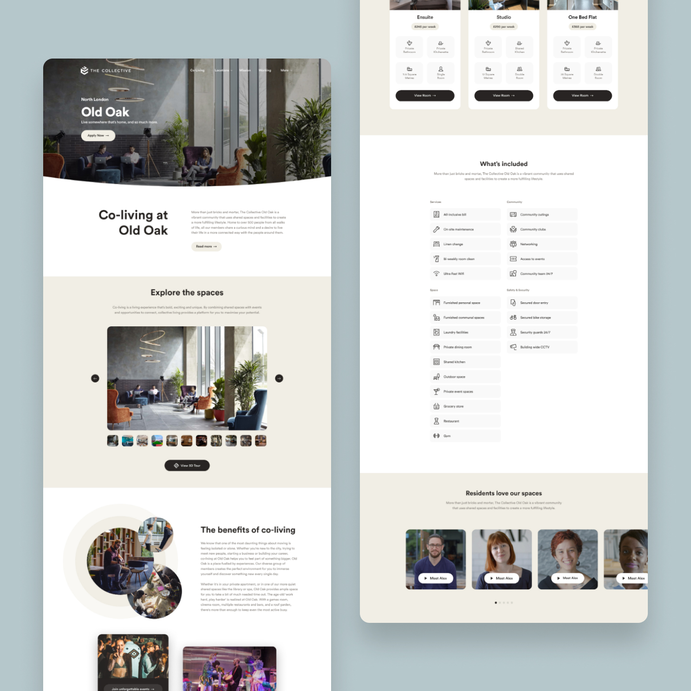
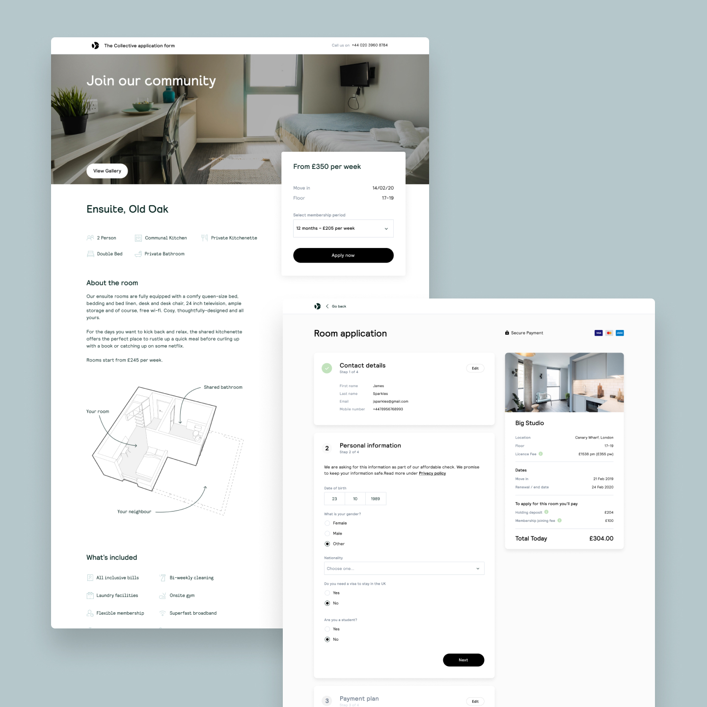
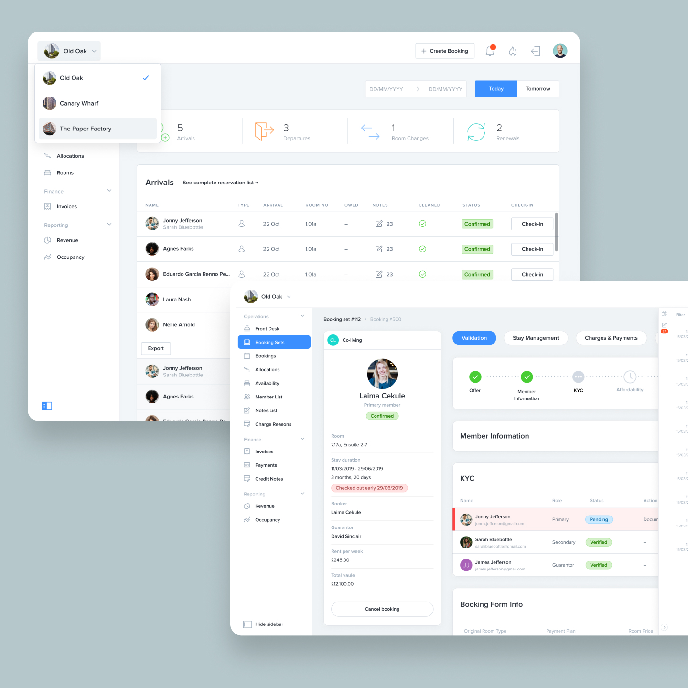
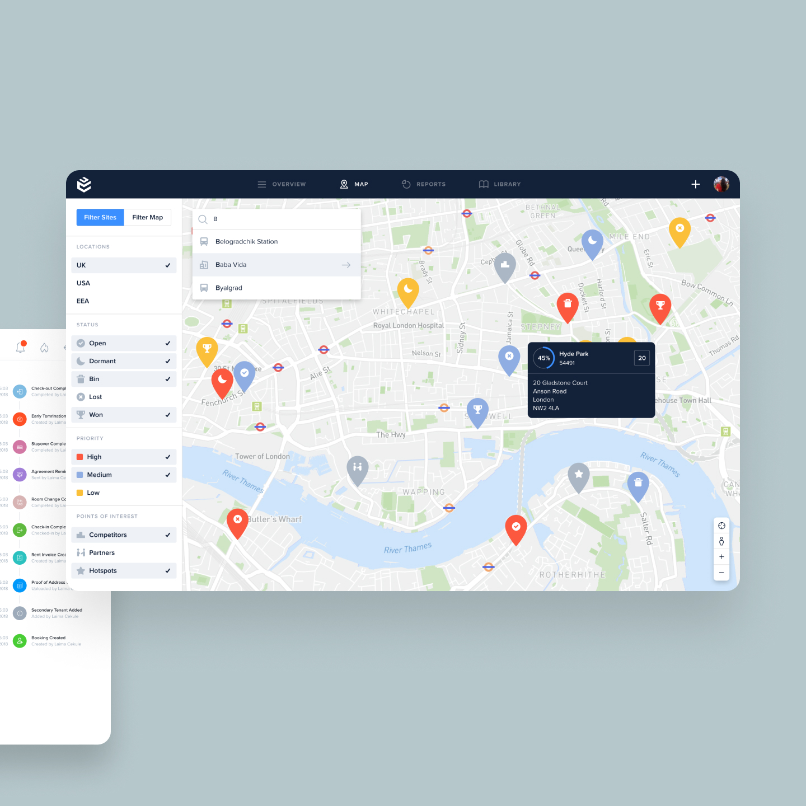
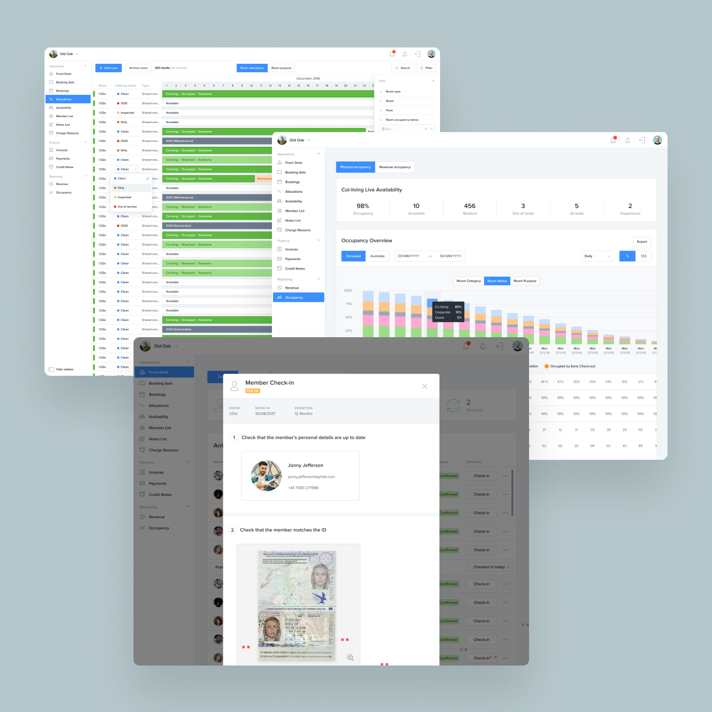

The Collective
During my time at The Collective I was the sole product designer during rapid growth at the company as they expanded. I was responsible for driving digital transformation across internal tools and resident-facing products. Designed an app with strong resident adoption. Designed and migrated teams to a new internal platform that improved operational efficiency by 40%. Delivered web and mobile experiences to streamline onboarding, digitised workflows, and built a unified design system to support rapid scaling with 2x users each year.










Tasks and responsibilities
- Platform designRedesigned and streamlined back-end data management platforms for operational efficiency.
- App developmentDesigned and iterated on a members' co-living companion app to enhance resident and staff interactions.
- Website redesignLed the UX/UI design for a new company website and microsites to improve user engagement and sales funnel efficiency.
- SaaS developmentContributed to the design of scalable SaaS platforms for property management and land acquisition.
- Research and testingConducted user research, focus groups, and usability testing to inform design decisions.
- CollaborationWorked closely with project managers, developers, and stakeholders to deliver high-quality digital products.
Introduction
The Collective is a co-living company that creates shared living and working spaces designed to foster community, collaboration, and innovation.
I joined The Collective in 2017 during a period of rapid growth and was tasked with transforming their digital infrastructure. My work spanned designing intuitive back-end systems, a members' app, and a new website, all aimed at enhancing user experience and operational efficiency.
Key features and functionality
Back-end data management platform
- Operational efficiencyRedesigned the platform to streamline hotel-like renting, customer, and finance management.
- User-friendly interfaceSimplified complex workflows to reduce training time for staff.
- ScalabilityEvolved the platform into a SaaS solution with features like financial management, analytics, and booking systems.
Members' co-living companion app
- Community buildingFeatures like interest groups, messaging, and event platforms to cultivate social connections.
- Smart home integrationEnabled residents to personalize their spaces using smart technologies being developed by the tech team.
- Staff toolsDesigned a lightweight CMS for staff to manage app content and user interactions.
Website and microsites
- User-centric designCrafted UX to guide potential customers through the sales funnel effectively.
- Modular designCreated adaptable microsites for events, workspaces, and targeted demographics.
- Performance optimizationReplaced the outdated website with a fast, modern, and maintainable solution.
Data-driven tools
- AcquireA data-driven land acquisition platform that tracks real estate market activity globally, integrates operational and financial data, and automates workflows.
- ColabA property management system designed uniquely for co-living, featuring intelligent room allocation, real-time occupancy reporting, and dynamic room pricing.
Design challenges and solutions
Outdated back-end systemsThe existing data management platform was incomplete and difficult to use, hindering operational efficiency.
SolutionRedesigned the platform with a focus on usability, scalability, and integration with financial and analytics tools.
Resident and staff app expectationsResidents and staff needed a seamless way to interact and manage co-living spaces.
SolutionDeveloped a members' app, conducting regular community town hall meetings and focus groups with residents to gather feedback and test new features. These collaborative sessions helped shape the development of key functionality like messaging, events, and support systems. The direct engagement with our user community ensured we built features that truly served their needs and created a more engaging co-living experience.
Ineffective websiteThe old website was slow, outdated, and unable to support the company's growth and did not reflect the company's vibe.
SolutionDesigned a new website and microsites with a focus on UX, performance, and modularity to support diverse business needs as the company was growing fast during this period.
Data integration and automationThe company needed tools to streamline land acquisition and property management.
SolutionDesigned and implemented Acquire and added features to Colab, integrating advanced data modeling, real-time reporting, and automation to improve efficiency and decision-making. Worked closely with stakeholders across departments to understand their workflows and pain points, ensuring the solutions we built streamlined their processes and reduced administrative overhead.
Visual design and branding
- Design systemCreated a cohesive design system to ensure consistency across platforms.
- Modern aestheticEmphasized clean, welcoming and earthy interface design language that reflected The Collective's innovative and community-driven ethos.
- Responsive designEnsured all platforms were optimized for desktop, tablet, and mobile devices focusing heavily n the mobile experience as this was when Monzo was growing fast and we wanted to be the Monzo of co-living.
Documentation and handoff
- Wireframes and prototypesDelivered wireframes and detailed interactive prototypes for all platforms to continually confirm and iterate the design with stakeholders.
- Design specificationsProvided assets and documentation for developers while working closely with the tech team to ensure the design was implemented correctly.
- User flowsDocumented user journeys for key features like app onboarding, event management, and website navigation.
Summary
Being part of The Collective's tech team and Innovation Labs was an incredible experience. Working closely with a the technology product managers, we explored cutting-edge technologies to bridge the physical and digital aspects of co-living.
A key focus was implementing machine learning and computer vision systems to gather real-world data that enhanced our digital products. This included collaborating with Salto, a key card operator, to develop a lightweight key management interface, as well as creating intuitive dashboards for monitoring building capacity and room occupancy patterns.
These tools provided valuable insights to our community teams and service design team, helping them better understand usage patterns and optimize the resident experience.
The opportunity to work at the intersection of technology and community building, while contributing to products that had meaningful impact on how people live and interact, was truly rewarding and pushed me to grow both technically and creatively.